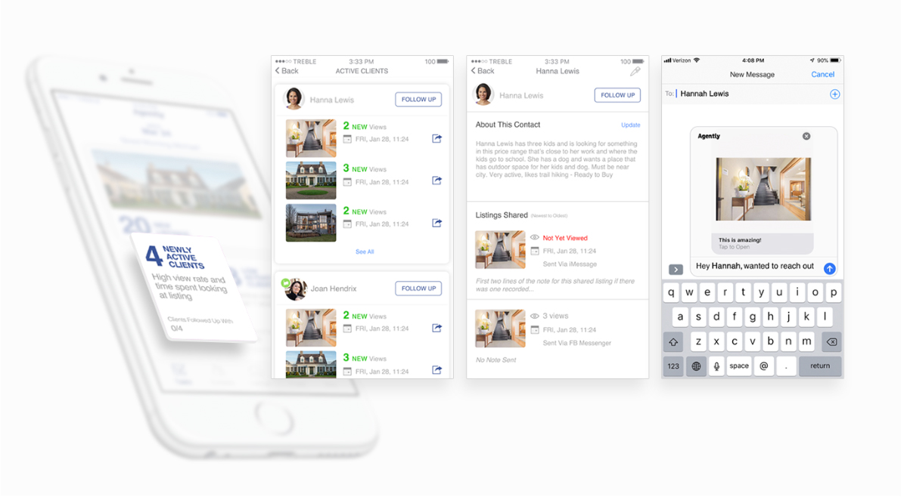
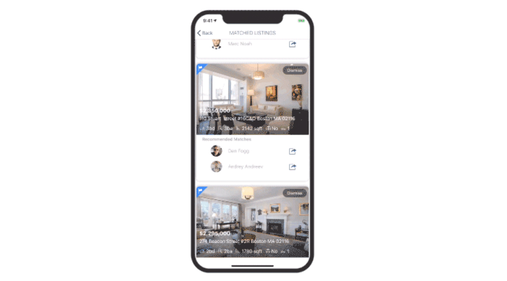
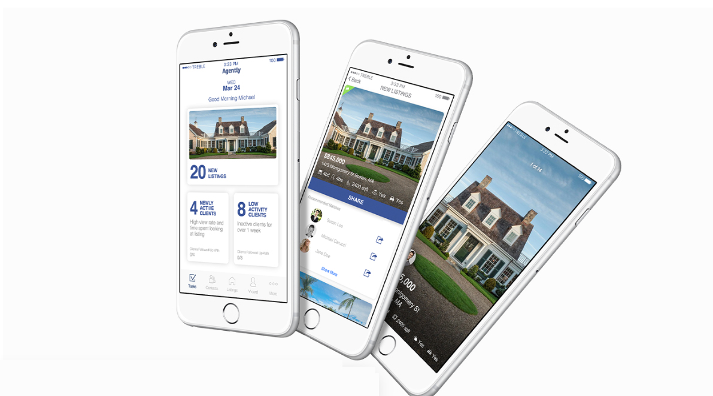
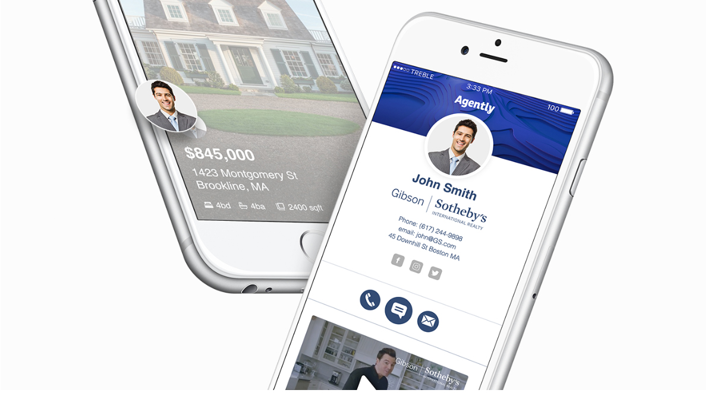
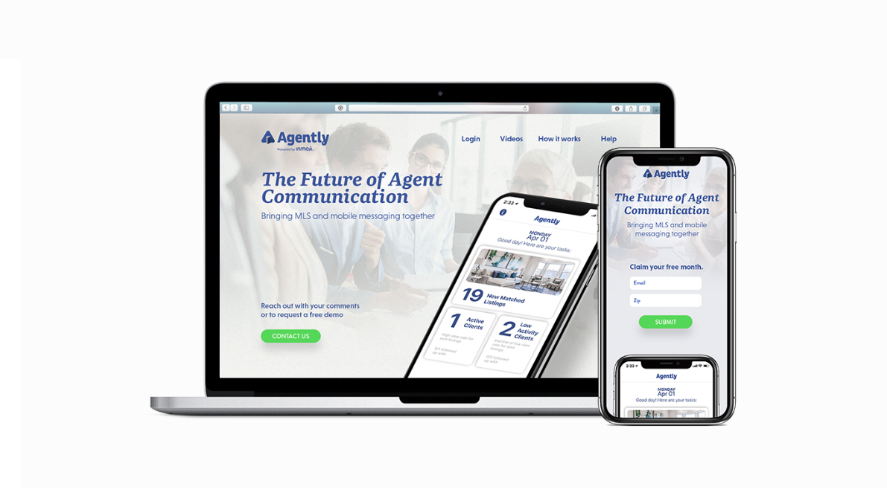

An intelligent recommendation and messaging platform built for how real estate agents actually communicate with clients — not how MLS software assumes they do.

[Ari: replace with the real problem] Agents were spending hours manually cross-referencing new listings against what each client wanted, then reaching out one by one — with no way to tell which clients were actively engaged versus going cold. How might we help agents prioritize their time and communicate with clients in the moment a match happens, instead of after the fact?
[Ari: swap in real research findings — interviews, competitive analysis, data points] Agents don't check dashboards on a schedule — they react to notifications throughout the day, often from their phone between showings. Any tool that required them to log in and dig for information would get ignored. Clients, meanwhile, engage most when a listing is shared to them directly and personally, not through a generic portal.


Agents open the app to a daily dashboard that surfaces what actually needs action: new matched listings, clients with high engagement who haven't been followed up with, and clients who've gone quiet. No digging — the highest-priority information is the first thing they see.

New listings are matched against each client's saved preferences and surfaced directly in a shareable card — price, beds, baths, and square footage front and center — so the agent can forward a match in a single tap instead of manually checking it against what the client wants.
Each client profile keeps a running note of what they're looking for, alongside a timeline of listings shared and whether they were viewed — so any agent picking up the conversation has full context without having to ask the client to repeat themselves.
Sharing a listing doesn't mean leaving the app — agents can message a client directly from the same screen where the match appears, with the listing already attached, keeping the whole interaction inside a single, fast motion.

[Ari: add real outcome — adoption numbers, client feedback, business impact, or what happened after launch] The finished platform launched in partnership with Gibson Sotheby's International Realty, positioning Agently as, in the product's own words, "the future of agent communication" — bringing together MLS data and day-to-day client conversation in a single mobile-first tool.

Placeholder: something like — designing for a mobile-first, in-the-moment user changes what "dashboard" even means. It's not a report, it's a to-do list.
Placeholder: something like — talking to actual agents early saved us from building a generic CRM nobody asked for.